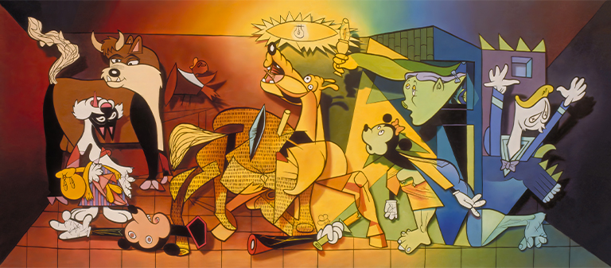

Exhibitions
Reimagining “Guernica” / La réinvention du “Guernica”, Museo de la Paz de Gernika, Gernika-Lumo, Bizkaia, Spain, April 4–December 10, 2017.
Notes
The work is documented in the Museo de la Paz de Gernika’s digital exhibition catalogue / flip-book, accessed April 5, 2026.
This work references Pablo Picasso’s Guernica.